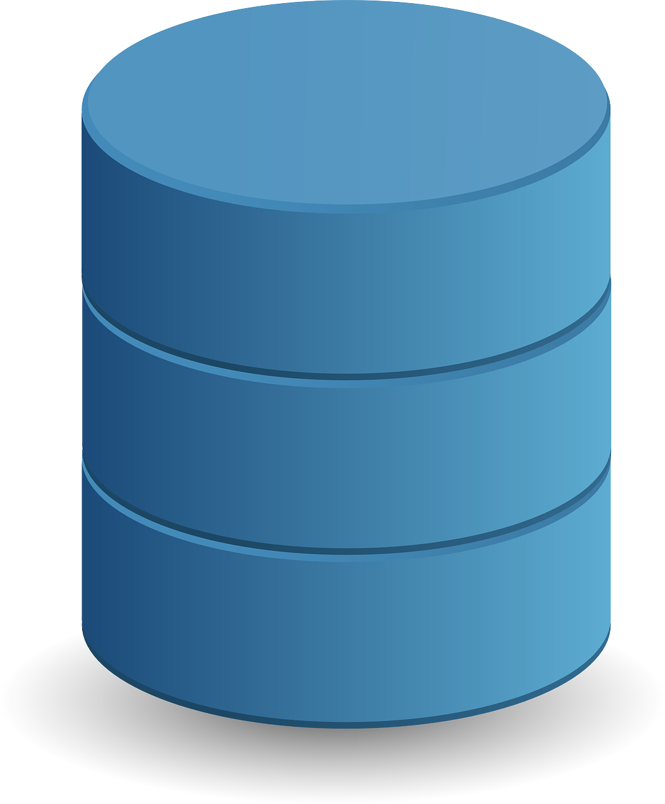

FinnaCloud
FinnaCloud Team
jmrosal@finnacloud.com
Value Proposition
Criar valor através do acesso fácil, compartilhado e modular dos dados e de ferramentas analíticas.
Princípios
Facilidade.
- Trazer o universo dos dados para internet 2.0.
Modularidade

- Descriminar demanda dos clientes e aprimorar processo de criação de valor.
Crowd Sourcing.
- Criação de rede e, portanto, fidelidade do usuário.
O que é FinnaCloud?
Data Warehouse

Repositório de dados de acesso fácil e intuitivo através de uma máquina de pesquisa poderosa.
Marketplace de Data Apps e serviços
- A nosso base de dados com uma "public utility": um "backend" de dados comum como plataforma para aplicativos.
Rede de Usuário de Dados
- Criação de crowdsourcing através do compartilhamento de informações e insights.
- Exemplos de Plataforma sociais "técnicas":
- Finanças E.U.A.: seekingalpha
- Jurídico - Brasil: jusbrasil
Tecnologia
- Backend 100% nas nuvens: base de dados, aplicativos etc
- Máquina de pesquisa de dados similar ao google search.
- Api Restful.
- Software clientes para consumo:
- Addin Excel.
- Addin Google Driver.
- Client Python.
- Client R.
- Etc.
Players Existentes
- Quandl: Data Backend de dados - Canadá
- 100% Cloudbased.
- Modelo de subscrição de bases curadas por parceiros.
Utilizado para backtests de modelos quant. Algum tipo de crowdsourcing.
- Trading Economics
- 100% Cloudbased.
- Modelo de subscrição.
Excelente Interface. Dados econômicos estruturados e sem compartilhamento.
- Quantum - Brasil
- Semi-Cloudbased.
- Modelo monolítico de dados de aplicativos: tudo ou nada.
Reconhecido pelas informações (Públicas) de Fundos Investimento.
- Economática - Brasil
- Semi-Cloudbased.
- Modelo monolítico de dados e de aplicativos: tudo ou nada.
Reconhecida pelas informações (públicas) de companhias abertas.
- Retailers Dominantes: Bloomberg, Reuters, etc.
- Semi-Cloudbased.
- Monolíticos.
- Alguma rede social.
Estimação de Desenvolvimento?
- Estima-se investimento de aproximadamente 3 meses com recurso adequados para:
- Finalização do desenvolvimento de FrontEnd inicial
- Aceleração de captura de novas base de dados.
- Desenvolvimento dos primeiros aplicativos proprietários para disponibilização.
Onde estamos?
- Desenvolvimento de Tecnologia Cloud:
[X]Estrutura de Base de dados e inicio de captura.[X]FrontEnd inicial.[X]Versão 0.1 da máquina de pesquisa.[X]Compartilhamento de dados e tabelas.[X]Api para dados e relatórios de parceiros.[X]Vários softwares clientes: Excel, R, Python
Estratégia de Lançamento e Disseminação
- Foco em dados brasileiros:
- Estruturados: Banco Central, IBGE, FED
- Não-Estruturados: CEPEA, FIPEZAP, CBIC, etc.
- Parcerias.
- Exemplo: Sagire - Consultoria Quant.
- Educação.
- Cursos de modelagem financeira com utilizando tecnologia FinnaCloud.
Fundadores
- João Maurício Rosal
- Mais de 10 anos de mercado financeiro como economista e estrategista.
- Professor universitário de economia e data science.
- Bruno Morozini
- Empreendedor serial em tecnologia web.
- Mais de 10 anos como devOps